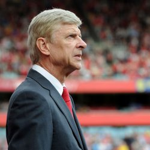

Ferguson was made an Inaugural Inductee of the English Football Hall of Fame in 2002 in recognition of his impact on the English game as a manager. In 2003, Ferguson became an inaugural recipient of the FA Coaching Diploma, awarded to all coaches who had at least ten years' experience of being a manager or head coach.
BiographySecrets of Success

Start with the foundation
Sir Alex says his first order of business was bringing in young players and building a youth system that could sustain the club for years, rather than signing veterans for short-gain success
Dare to rebuild your team
Since he wasn't afraid of being fired, he made decisions based on what the team would look like in four years. He thinks that every team should be retooled every four years.
Set high standard — and hold everyone to them
"I used to be the first to arrive in the morning. In my later years, a lot of my staff members would already be there when I got in at 7 AM. I think they understood why I came in early—they knew there was a job to be done."
Never, ever cede control
You have to get rid of an employee if he's creating discord and trying to wrest some of your power, even if he is the best player in the world. Don't worry about whether employees like you.
Match the message to the moment
Ferguson says there is no general rule about when a manager should criticize players and when a manager should encourage players. The context of a situation determines the best message to send to your team.
Prepare to win
This is more about risk-taking than anything else. Ferguson's philosophy is that if you're down 2-1, you might as well put on an extra offensive player and lose 3-1 rather than play conservatively and lose 2-1 anyway.
Rely on the power of observation
Early in his career, he delegated managing practices to assistant coaches so he could simply watch and observe what was going on with each individual player. He said, "I don't think many people fully understand the value of observing."
Never stop adapting
English soccer exploded into the multi-billion dollar business it is during Ferguson's tenure, but he was still able to win, regardless of the changing nature of the sport. He explains, "I believe that you control change by accepting it."
Collegues about SAF
 Arsene Wenger (coach of "Arsenal"): "This is a fantastic achievement. Regardless of our differences, you have to admit that it is a fantastic achievement. I think you can not deny that he has done and I respect it. "
Jose Mourinho (coach of "Chelsea"): "A thousand games played in the same club, it's unbelievable, just fantastic. You must be super - coach and love football, you have to love the club and the players have to love you, because when you're working at the club for so long, if you do not like the players, they will not be able to make your arrival each morning. But 1,000 games for me - it's not feasible."
Marcello Lippi (coach Italy and ex - coach "Juventus"): "Ferguson is not only a great coach but also a friend of mine, whom I respect a lot. It was a great pleasure to meet him in the cup match. He has already entered the history of English football.
Alex McLeish (ex-player of "Aberdeen," coach "Rangers"): "He is a leader by nature and can lead people. He makes this all the power and it does not matter, he coached a club as "United", or someone else, he will succeed. It gives players a huge belief in themselves, and even when we played in the final of the Cup Winners' Cup with Madrid "Real", he absolutely did not care and made sure that we do not experience the same excitement. His awesome power of nature is undeniable. "
Bryan Robson (former captain of the "MU" coach "West Brom"): "He had an incredible impact on the players. I'm not just talking about the 1000 Games, but also about those standards that he established not only in the "United", but in "Aberdeen". For me it is not surprising, since he lives and breathes football. He spends a lot of hours in the office and on the training field, his whole life revolves around football. "
Peter Schmeichel (the legendary goalkeeper of "MU"): "You have to earn his respect, but it is clear what he wants. He is not interested in your life until you show a stable game and make every effort in training. Do this, and he will trust you. Fergie can be very aggressive when there is a problem, but then it goes away. There are thousands of better coaches. The training process is not a "fad" Fergie. But management? The ability to manage people? There is no one better.
Sir Bobby Charlton (the legend "United"): "He feels that he has to make an incredible effort, achieving success and enthusiasm, no one can withstand. He -prirozhdenny winner and second place does not suit him. At the highest level it has no equal."